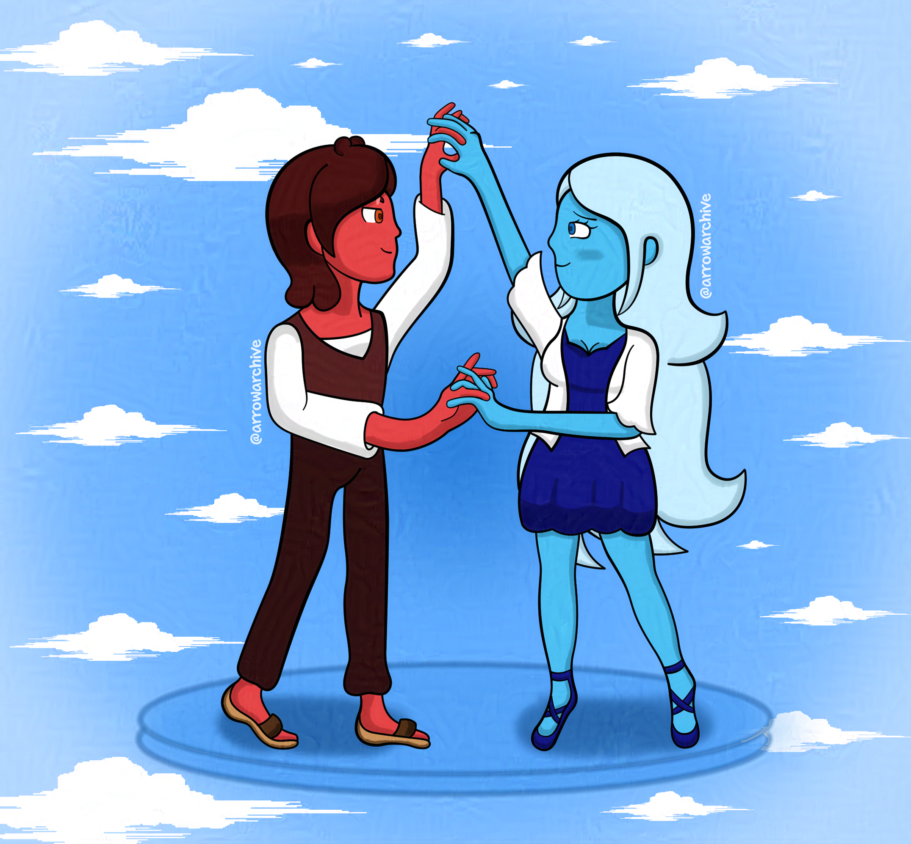

Oblivion
Songs inspire me more than I thought. This summer, I was listening to “Oblivion” by TheFatRat, which painted a strong picture in my head. It made me think of a relationship where a couple feels unstoppable when together, as if they could walk on air or cross dimensions unscathed, euphoria that can’t be topped…
…But that’s enough rambling. The song was dream-like, and I portrayed it the best I could. I experimented with side views as well, which I did well with here but is something I need to improve going forward.
I could have drawn the arms better and made the clouds more detailed, but that is something I will focus on later. This was one of my favorite drawings this year, and I won’t let it fade into oblivion, that’s for sure!